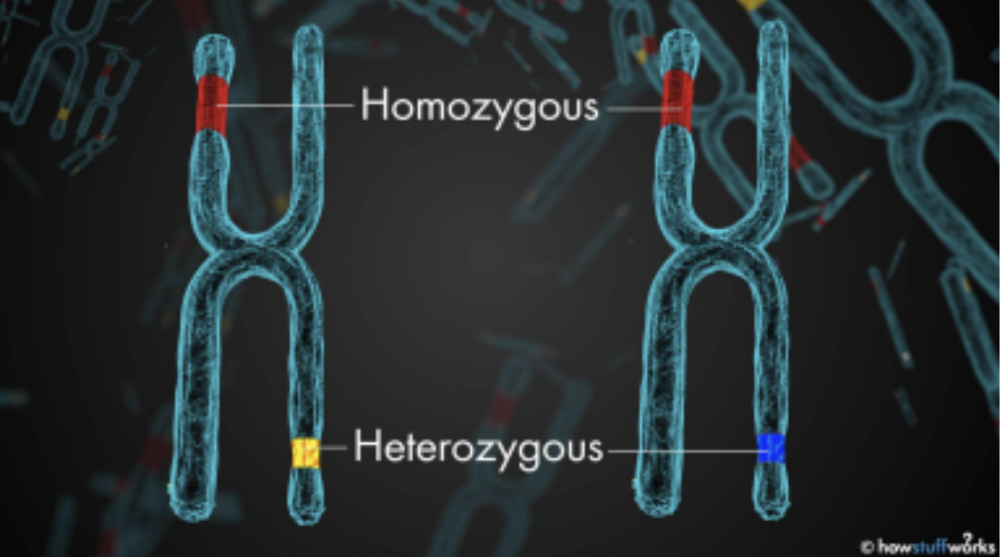

What Is a Mutation?
A mutation is a change in DNA sequence. Your DNA codes for RNA which codes for proteins. Proteins do everything in your body, from harnessing glucose to power your cell, to replicating your cells, to moving your muscles. If one of your proteins stops working, it causes serious problems and can be lethal.
When the DNA sequence is changed, often this means the protein changes in a small way and does not affect its function. However, mutations often cause problems like cutting the protein short or changing a large part of the protein. When this happens, the protein becomes dysfunctional.
It’s important to remember, however, that humans have two copies of every gene. Because of this, if a mutation arises in one copy of the gene, the organism usually can continue to function. Problems only arise when two copies of the same dysfunctional gene are present in a person. This means that the correct code for that protein is not present in that individual, so that person will have no functional version of the protein. This is often referred to as being homozygous recessive, and can be lethal.
 Possible Caption if we wantWhy Are Mutations Harmful?
Genetic mutations are changes to your DNA. Your DNA tells your body how to form and function by coding for proteins. Mutations are harmful because they give your body incorrect instructions on how to function and build proteins. The word homozygous means “having two identical alleles of a particular gene or genes” When somebody is homozygous for a mutated gene, then the mutation will be expressed and cause problems.
A common example of double recessive inheritance is the disease cystic fibrosis. Cystic fibrosis is a mutation in a chloride ion transporter that makes your mucus sticky. People with this one dysfunctional protein will frequently get respiratory infections and have problems breathing. Previously, people with this disease would die before the age of 30, but with modern medicine they usually live to be 50. One in 25 people carries this gene, but because they only have one bad copy of it, it’s not a problem for them. It’s only when two carriers marry that one of their children could get the disease.
Possible Caption if we wantHow Do Mutations Arise?
Genetic mutations are changes to your DNA sequence that happen during cell division when your cells make copies of themselves. Mutations arise either from errors in DNA replication or from the damaging effects of mutagens, such as chemicals and radiation, which react with DNA and change the structures of individual nucleotides. These outside factors like radiation and chemicals can greatly increase the chances of mutations occurring as well. There are over 10,000 genetic disorders, all caused by mutations and being homozygous to that specific mutation. Two very common examples of genetic disorders are cancer and cystic fibrosis.
Why Does This Make Inbreeding Harmful?
People that are closely related have a lot of the same DNA. Siblings on average share half of their DNA, first cousins typically share an eighth, second cousins share one thirty-second and so on. This makes it likely that relatives will have the same dysfunctional genes, and more likely that they will pass it on to their kids. For example, the average person has about 20 recessive genes that are completely dysfunctional, and 100 genes that have some loss of function.
Again, this isn’t a problem because we have two copies of each. If you marry someone random, the odds of both of you having the same inactivated gene is very low, since humans have about 20,000 genes. But if you marry your first cousin and had kids, the odds of those kids both inheriting the same completely dysfunctional gene from both mom and dad is 73 percent, and the odds of any loss of function is nearly 100 percent. It is for this reason that marriage between cousins is illegal in many states.
Possible Caption if we wantWhy Wouldn’t Inbreeding Have Been Harmful in Genesis?
Genesis 1:27 reads, “So God created man in his own image, in the image of God created he him; male and female created he them.” While there are debates among scientists and theologians about the origin of the earth, animals, and mankind, this verse tells us that God created man, complete with DNA, proteins enzymes, and all the things that make humans human. It can be assumed from this that God created Adam with perfect DNA, no mutations and no dysfunctional alleles. Thus, mutations in the human genome would arise over time, meaning that for the first several generations, mating with siblings and cousins would not be harmful. By the time of Moses, many generations had passed, and so God commanded Israel to not marry siblings, cousins, and other relatives.
Another prominent theory is the pre-adamite theory, a theory that states that humanoid creatures existed before the creation of Adam. Adam’s descendants could have married these people.
Possible Caption if we wantConclusion
Nowadays, inbreeding is very harmful. Marrying your cousin will almost certain mean your children will have some kind of genetic problem. Many use this as an argument against the historicity of the Bible, because Adam’s descendants would have had to intermarry. Back in the days of Adam, however, when the earth and humankind was young, people had not built up enough mutations for inbreeding to be harmful. After many generations, enough mutations could build up to make inbreeding dangerous. This may be the reason for Sarai, Rebekah and Rachel all having fertility problems. Eventually, during the time of Moses, inbreeding was banned.
 Possible Caption if we want
Possible Caption if we want